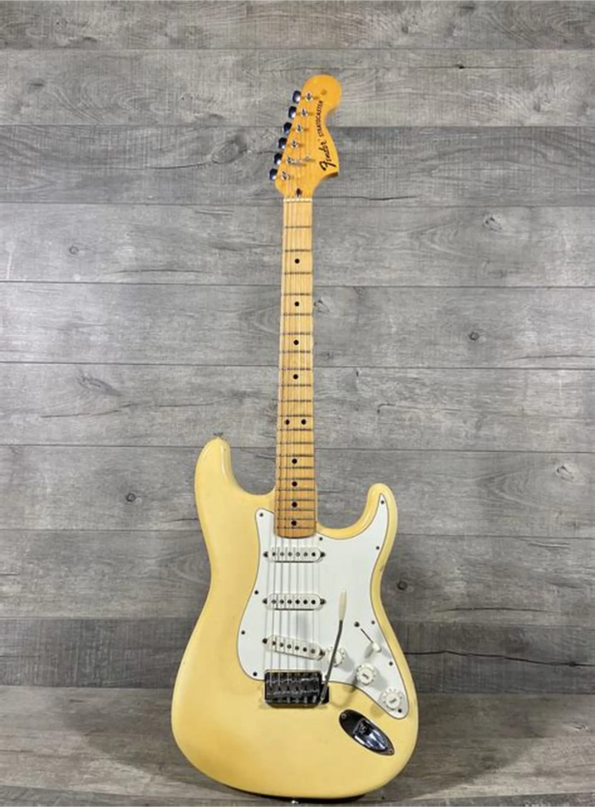

{kind=link}
Stratocaster
Unindo o visual vibrante do acabamento vermelho ao som cristalino dos três captadores single-coil, esta Stratocaster é a escolha definitiva para quem busca versatilidade. Com corpo ergonômico para máximo conforto e braço em formato "C" que facilita a tocabilidade, ela entrega desde o estalo clássico do Blues até a pressão do Rock. Equipada com ponte tremolo para vibratos expressivos e chave de 5 posições, é um instrumento pronto para qualquer palco ou estúdio.

Tagima
Com um acabamento bege clássico e refinado, esta Tagima une estética retrô a uma tocabilidade moderna e confortável. Equipada com três captadores single-coil, ela entrega o timbre brilhante e definido que é marca registrada do modelo, sendo perfeita para iniciantes e profissionais que buscam um instrumento confiável. Seu braço em Maple oferece uma pegada firme e veloz, enquanto a ponte tremolo garante a expressividade necessária para seus solos e bases.

Tagima Black
Com acabamento em preto sólido e um visual imponente, esta Tagima é feita para quem busca sobriedade e presença no palco. Equipada com três captadores single-coil, ela entrega o timbre clássico, brilhante e versátil que se adapta de limpos cristalinos a drives encorpados. O corpo ergonômico e o braço de tocabilidade macia garantem conforto total, enquanto a ponte tremolo oferece a flexibilidade necessária para sua expressão musical.

Fender
Com o lendário acabamento bege vintage, esta Fender é a personificação do timbre que definiu gerações. Equipada com captadores single-coil de voz clássica, ela entrega agudos cristalinos e aquele "quack" percussivo inconfundível. O braço com raio tradicional e o corpo em madeira selecionada proporcionam uma ressonância superior e a pegada autêntica que só uma Fender legítima oferece. É o equilíbrio perfeito entre estética retrô e a máxima performance profissional.